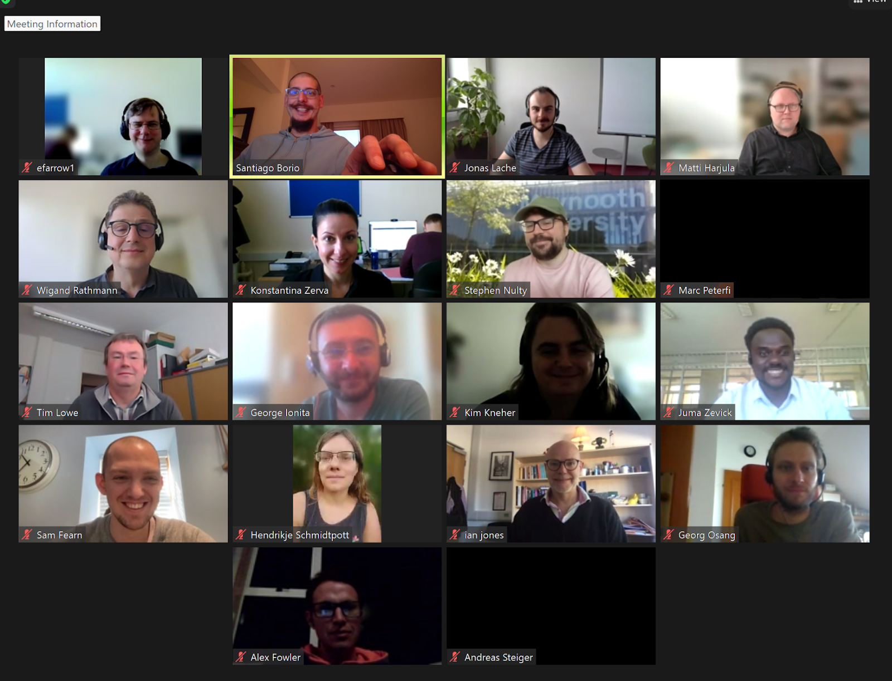

4th STACK Professionals Network meeting report, September 2023
The 4th STACK Professionals Network meeting took place on the 21st of September 2023 online.
Present at the meeting
Chris Sangwin (CJS), Konstantina Zerva (KZ), Edmund Farrow (EF), Santiago Borio (SB), Georg Osang (GO), George Ionita (GI), Juma Zevick (JZ), Matti Harjula (MH), Ruth Reynolds (RR), Stephen Nulty (SN), Tim Lowe (TL), Wigand Rathmann (WR), Alex Fowler (AF), Sam Fearn (SF), Marc Peterfi (MP), Ian Jones (IJ), Jonas Lache (JL), Kim Kneher (KK), Andreas Steiger (AS)
Apologies: Maciej Matuszewski, Chris Nelson, Curtis Hooper.
Acknowledgements: Thanks to KZ for hosting and to SB for taking notes.

Figure: Participants of the Network meeting
Agenda
Welcome to new members and introductions
Regular slot for the meeting
Do we all agree for Thursdays?
Same time or shifting times to accommodate time zones?
Volunteer to host the next meeting?
Website management team proposal
HELM funding - internal application UoE
New case studies
STACK projects (ongoing)
Groups and Communities
“Warnings” in release notes for new versions of STACK
Version numbers mapping
AOB
Meeting Notes
1. Introductions:
All present introduced themselves briefly, outlining their institution and key role.
New members were welcome.
2. Slot for meetings
Participants agreed that Thursdays are generally OK.
Probably shifting times would be convenient as at least one member will be lecturing at this time slot for this meeting. Shifting time would make it ‘easier’ for some individuals due to time zones and regular clashes.
Date for next meeting: 19th October. RR volunteered to host at 3pm BST
3. Website management team
SB proposed a team to manage and implement, review PRs, etc. More structural changes would be discussed with the Development team. EF is happy to join the team. SF is happy to contribute here and there but is busy this term so will do what he can.
4. HELM funding - internal application UoE
KZ is considering applying for funding to complete the HELM workbooks migration to STACK. She is writing a proposal. It would possibly include translations. WR can share his use and experience. Any research on translating paper based questions to electronic versions would be beneficial, IJ may be able to find literature from OFQUAL and may have small bits of funding (TBC). The project would start next British summer.
5. New case studies
SB mentioned the INNODEMS Internships and African STACK Conference case studies. SF asked if a project on a possible new question type could lead to a case study. SB suggested it would be and gave examples of various styles of case studies.
CJS encouraged members to provide case studies, it has a big impact for funding to show that the project is alive. SB offered to upload case studies for others.
6. STACK projects (ongoing)
New section in the website to report on ongoing, upcoming and completed projects. This could be to report on larger scale interventions than case studies or provide partial reports on achievements. Currently there is a branch in the website repo that would be published once more projects are included.
7. Groups and Communities
SB outlined the new community published in the website: the African STACK Community Leadership Team. SB encouraged members of other groups to reach out to him for support to create their own page if needed.
8. “Warnings” in release notes for new versions of STACK
It wasn’t particularly clear for JL that the upgrade of STACK to 4.4.3 could break some questions, in particular JSXGraphs questions. A request was made for future releases to include warnings for possible issues in the release notes. CJS acknowledged and agreed we need to be more careful and provide context.
The idea of a dev machine for testing and highlighting issues pre release would be useful was raised again. Some members don’t have admin access to their Moodle setups and struggle to test things. SB suggested that IDEMS has a sandbox server where he can provide admin rights to anyone who would like to test, which should be kept updated with the latest Moodle and STACK versions.
MH suggested that some testing tools are available to non-admin users under qtype/stack:usediagnostictools.
CJS suggested he and his team would draft documentation on how to use require_capability('qtype/stack:usediagnostictools', $context);
TL reminded the group that we had a ‘release notes page’ when we moved to Moodle/Stack 4 and suggested that perhaps we need one for every release that people can contribute to. CJS and others explained that this was due to significant changes in the release but agreed that more thorough release notes would be a sensible idea and reminded all that contributions to the documentation are welcome.
9. Version numbers mapping
TL asked the network if it there is a way to map the ‘20230605’ style version number in the XML to the ‘4.4.3’ friendly version number?
MH replied that this is not easy, but one can search through the github repo. GO mentioned a goemaxima table (middle 2 columns are the relevant ones). SF requested to have that in the STACK docs and TL requested for this could be included in the user docs, maybe linked to the release notes. MH mentioned the need to link to Ilias.
GI asked if there was a database of literature and if there is a method to share our research. SB mentioned there is a publications section in the docs and TL mentioned the BibTex bibliography at the end of the publications section. SB agreed to investigate making the list visible in the publications docs rather than having to download the pdf.